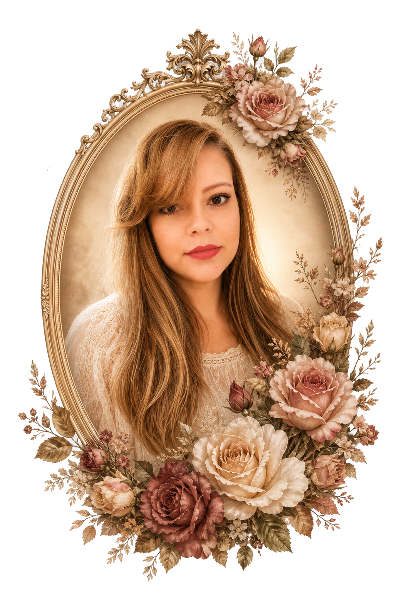

Atendimento médico geral
Avaliação clínica, orientação e cuidado integral para diferentes necessidades de saúde.
Quem sou eu?
Atendimento médico para adultos e crianças, com cuidado integral para o corpo e para a mente.
◉ Agendamentos pelo WhatsApp Atendimento 24 horas mediante agendamento ou ligação
Sou médica, formada pela Universidade Federal de Roraima.
Após a graduação, construí minha experiência em diferentes cenários da assistência médica, incluindo plantões e atuação em cidades do interior. Essas experiências me aproximaram de diferentes realidades e reforçaram uma convicção que carrego até hoje: cuidar de uma pessoa vai além de tratar uma doença.
Ao longo da minha trajetória, continuei aprofundando meus estudos no cuidado integral do paciente e em saúde mental, áreas que hoje fazem parte da minha prática médica.
Atualmente, realizo atendimento médico geral para adultos e crianças, acompanhamento clínico e avaliação de demandas relacionadas à saúde mental, sempre de forma individualizada e acolhedora.
Hoje inicio uma nova etapa da minha história no Jardim Guanabara, em Goiânia, com um consultório criado para oferecer um atendimento próximo, cuidadoso e humano.
Avaliação clínica, orientação e cuidado integral para diferentes necessidades de saúde.
Seguimento contínuo e revisão de metas de cuidado de forma individualizada.
Atendimento médico de demandas relacionadas à saúde mental, com escuta e responsabilidade.
Cuidado que considera o corpo, a mente, a rotina e o contexto de cada pessoa.
Avaliação de riscos, revisão de exames e orientações preventivas.
Atendimento adaptado à idade, à história e às necessidades de adultos e crianças.
Tempo e atenção para compreender dúvidas, sintomas e contexto.
Decisões ajustadas às necessidades e objetivos de cada pessoa.
Continuidade para observar resultados e rever caminhos quando necessário.
Uma relação profissional acolhedora, clara e construída com confiança.
Cuidar de você é a minha missão: confiança, respeito e dedicação.
Horário de atendimento
Atendimento 24 horas mediante agendamento ou ligação.